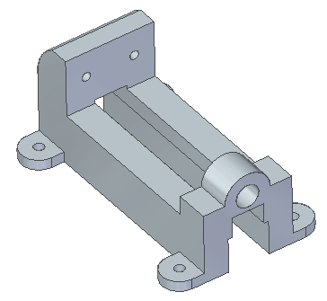
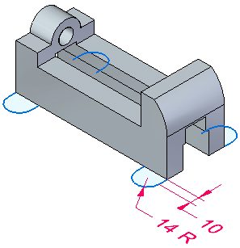
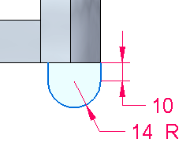
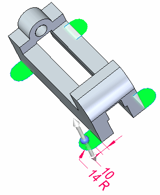
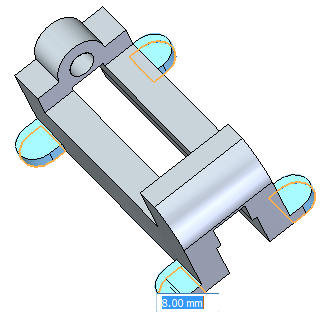
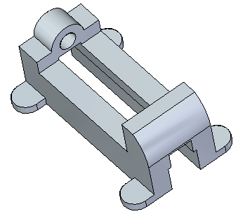
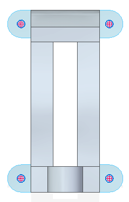
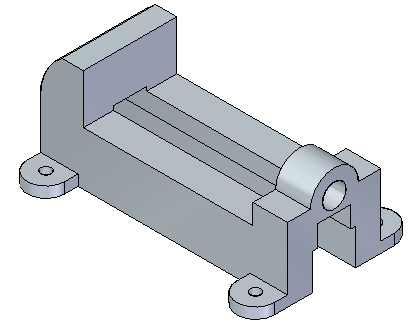
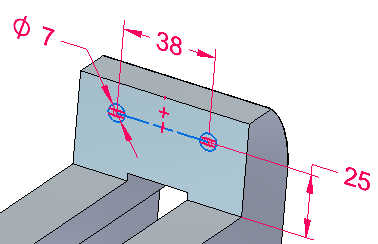
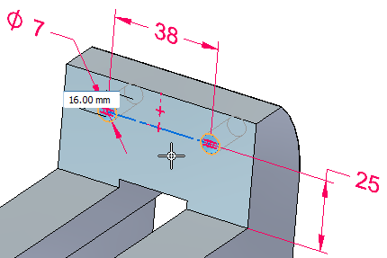

Activity: Add material to a base feature

Overview
In this activity you will
Create the four feet of the vise by extruding four regions at once.
Create cutouts at the back of the vice and through the feet.
If you are using Internet Explorer and a video is not displaying in your training guide, click the Tools tab (or gear icon)→Compatibility View settings, and then clear the selection of Display intranet sites in Compatibility View.
Open the file saved from the Activity: Remove material from a base feature.
On the bottom face of the part, sketch four mounting flange profiles using line and arc elements.


Holding the Shift key, select the four regions shown.

Select the “up” arrow to add material towards the top of the part. In the dynamic input box, type a distance of 8 mm and press Enter.


Sketch four circles of diameter 8 mm on each of the mounting flange faces. Place the circles concentric with flange arc.

Select all four circles and remove material from the flanges.

Sketch two 7 mm diameter circles on the face shown and add dimensions. To center the two circles on the face, draw a line connecting the two circle centers. Change the line to a construction element. Align the midpoint of construction line to the midpoint of the top edge on the face.

Select both circular regions. You may need to use QuickPick to select the regions.
Remove material at a depth of 16 mm.

Click the left mouse button to finish.
Save and close this file.
In this activity you continued to apply techniques to add and remove material from a base feature.
Click the Close button in the upper–right corner of this activity window.